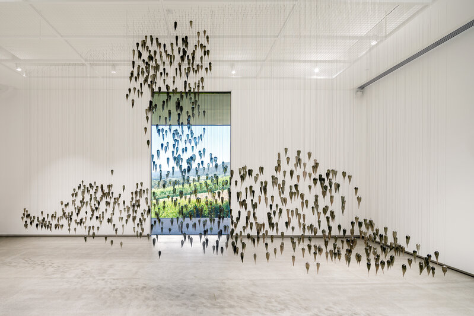
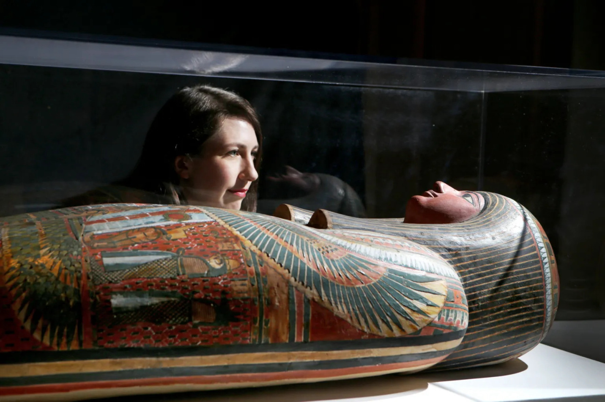
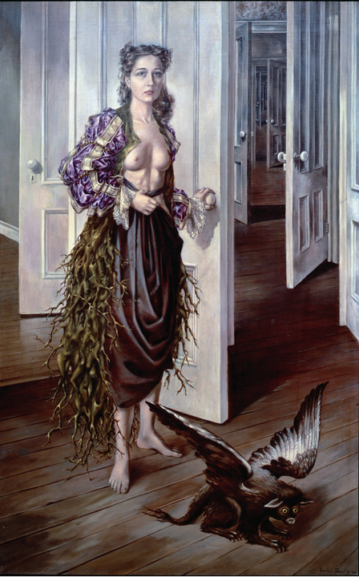
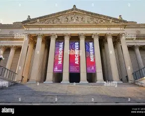
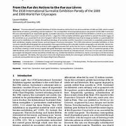

创伤与修复 的双重变奏
艺术的转向： 从对抗到修复
艺术不再只是表达自由，
而是修复关系的行动。
创伤是全球结构性存在，
它穿越殖民边界、时间断层与身体记忆。
超现实主义以梦境揭示被压抑的真实，
原住民艺术以在场重建被切断的纽带。
当两者在镜像中相遇，
我们看见的不是对立，
而是修复的可能。
YOYI
Indigenous Contemporary Art
Surrealism
超现实主义
创伤结构地图
Five Dimensions of Trauma
镜像对照：十组艺术对话
以下十组配对，将"YOYI：原住民当代艺术"与"跨越国界的超现实主义"进行系统性对比，揭示二者在创伤认知与修复路径上的深层对话。
Ten pairings systematically compare "YOYI: Indigenous Contemporary Art" with "Surrealism Across Borders," revealing a deep dialogue on trauma recognition and repair pathways.
身体， 从什么时候开始， 不再属于自己？
制度、法律、父权与社会规范不断塑造身体的边界。
艺术并非只是揭露创伤，
而是在寻找重新夺回身体主动权的可能。
生命终止 × 生命诞生
Paula Rego vs Laurent Marcel Salinas
聚焦女性身体与生命自主权，以及身体在社会规训下的解放。
修复制度暴力、父权压迫、身体规训带来的身体异化。
创作背景
1998至1999年创作于葡萄牙，直接回应1998年葡萄牙堕胎合法化公投失败的社会现实。当时葡萄牙受天主教保守势力长期主导，法律严格禁止堕胎，大量底层女性因意外怀孕只能求助非法诊所，手术环境恶劣、医疗安全无保障，导致感染、残疾甚至死亡事件频发。艺术家葆拉·雷戈以身边亲友真实经历为素材，用粉彩绘画直面这一被社会长期遮蔽的议题，将私人痛苦转化为公共政治议题，成为葡萄牙女性权利运动的重要艺术发声。
作品寓意
作品以温和克制的画面语言，呈现女性在非法堕胎过程中的恐惧、无助、隐忍与身体创伤，不刻意渲染血腥暴力，却以细腻的神态与肢体刻画直指生命权与身体自主权的尖锐冲突。画面中的女性姿态、空间氛围与光影处理，象征法律与宗教对女性身体的双重规训与压迫，揭示制度性暴力如何制造群体性社会创伤，将女性身体置于国家、宗教与传统道德的多重压制之下。
核心意图
以艺术介入社会公共议题，打破葡萄牙社会对堕胎议题的沉默与污名化，为缺乏话语权的底层女性发声，呼吁正视女性对身体的自主决定权。作品试图推动公众从道德审判转向对生命安全与性别正义的思考，用视觉叙事软化社会对立情绪，为后续政策讨论提供情感与伦理支撑，最终间接影响2007年葡萄牙堕胎合法化二次公投的通过。
创作背景
1949年创作于二战后欧洲重建时期，超现实主义艺术从早期反抗法西斯与日常秩序，转向对生命本源、无意识心理与精神重建的深层探索。艺术家深受弗洛伊德精神分析影响，关注梦境、原欲与生命起源等非理性主题，试图摆脱写实主义对"诞生"的生理性再现，以超现实视觉语言回应战后人类对生命意义、存在价值与精神救赎的普遍渴求，在废墟之上重新思考生命的本质。
作品寓意
作品以变形、符号化、非写实的人体与空间结构，将"诞生"从生理事件提升为精神与灵魂层面的创生。画面中混沌而充满张力的形态，暗示生命起源的神秘、原初与无意识力量，象征诞生不仅是肉体的出现，更是自我意识、欲望与精神能量的觉醒。作品拒绝理性化的生命叙事，以超现实意象构建生命与梦境、潜意识与宇宙力量之间的联结。
核心意图
跳出传统艺术对生育的纪实性表达，从精神与心理维度重新定义"诞生"，探索人类存在的深层心理结构。艺术家希望通过超现实语言唤醒被理性压抑的原始感知，引导观众超越现实逻辑，直面生命的神秘性与精神性，在战后信仰崩塌的时代重建人与内在精神世界的连接。
身体疗愈解放 × 身体异化囚禁
Lygia Clark vs Hans Bellmer
修复制度暴力、父权压迫、身体规训带来的身体异化。
探索身体在权力结构中的异化与抵抗，揭示身体既是压迫对象也是反抗媒介。
创作背景
1960年代，巴西艺术家莉吉亚·克拉克从几何抽象绘画彻底转向参与式艺术实践。当时巴西处于军事独裁高压统治下，社会氛围压抑、个体自由受限，人与人之间充满不信任与疏离感。克拉克反思传统艺术"观看式"的局限，提出"身体即是客体"的理念，以弹性织物、紧身衣、网状结构为媒介，让观众主动进入、触摸、缠绕与互动，把艺术从美术馆展品变为身体体验与疗愈行为。
作品寓意
紧身衣与弹性网的包裹、束缚、拉伸与解脱过程，高度隐喻现代社会对身体的规训、心理创伤的禁锢，以及挣脱束缚后的释放与疗愈。观众在身体互动中感受到压力、紧绷与松弛，象征个体从历史创伤、社会规训与自我压抑中逐步解放。作品将身体转化为疗愈媒介，强调集体参与带来的情感共鸣与精神修复。
核心意图
通过沉浸式身体体验实现心理疏导与集体疗愈，打破艺术与生活、艺术家与观众的边界。克拉克希望艺术成为修复社会关系的工具，重建人与人之间的信任、共情与联结，在独裁环境中以温和方式抵抗精神控制，为个体提供安全的情感释放空间。
创作背景
1933至1935年创作于纳粹德国统治初期，纳粹政权极力推崇"雅利安完美身体"的极权美学，对身体、欲望与艺术实施严格管控，不符合官方趣味的作品被列为"颓废艺术"。艺术家汉斯·贝尔默反对法西斯身体政治与父权压迫，秘密制作可拆解、扭曲、重组的球形关节人偶，以私人反抗姿态对抗国家暴力对身体与人性的异化。
作品寓意
破碎、扭曲、可任意拼接的人偶形态，象征极权与父权社会下身体被暴力改造、欲望被压抑、精神被囚禁的状态。人偶的非完整性与不安感，直指现代社会对身体的物化、规训与暴力控制，揭示"完美身体"话语背后的权力压迫，成为超现实主义反抗极权的标志性符号。
核心意图
以极端视觉语言批判纳粹美学与父权体制，揭露权力对身体与欲望的控制。贝尔默通过人偶的异化形态唤醒公众对身体自主权的意识，以艺术方式进行地下反抗，捍卫人性、欲望与个体表达的自由。
土地会记住， 所有发生过的暴力。
殖民、核试验与资源掠夺留下的伤痕并未消失，
它们沉积于土地，
也沉积于共同的历史记忆。
核试验土地创伤 × 非裔殖民文化突围
Yhonnie Scarce vs Wifredo Lam
修复殖民开发、核试验、生态掠夺造成的土地创伤。
修复土地记忆、生态破坏、文化侵蚀带来的家园异化。
创作背景
当代澳洲原住民艺术家Yhonnie Scarce以玻璃艺术回应Maralinga核试验场的历史创伤。1950-1960年代英国在澳洲西部沙漠进行多次核试验，严重污染原住民土地与水源，造成世代健康损害与文化断裂。Scarce使用吹制玻璃创作核蘑菇云形态与原住民传统编织图案的融合作品，将西方工业材料与原住民工艺传统并置。
作品寓意
玻璃的透明、脆弱与锋利特性，象征核辐射的无形伤害与土地的破碎。蘑菇云与编织图案的重叠，表达殖民暴力与原住民文化记忆的纠缠。作品将抽象的核创伤转化为可触摸的视觉语言，让观众感受土地被撕裂、文化被侵蚀的痛感。
核心意图
通过艺术修复被核试验摧毁的土地记忆与文化联结，迫使公众直面殖民历史遗留的环境正义问题。Scarce希望作品成为疗愈的媒介，帮助原住民社群面对创伤，并唤起更广泛的社会关注与责任意识。
创作背景
1944年创作于纽约，古巴艺术家Wifredo Lam身处二战流亡时期，面对欧洲文明的崩塌与美洲殖民历史的沉重。他融合非洲约鲁巴宗教符号、古巴Santería信仰与超现实主义视觉语言，创造出既神秘又充满政治隐喻的作品。《永恒的当下》是其标志性作品，展现了他对"去殖民化视觉"的探索。
作品寓意
画面中非人非兽的混合生物、缠绕的植物与神秘符号，构成了一个既古老又现代的精神空间。这些形象象征着被殖民历史压抑的非洲、加勒比和美洲原住民文化的复苏与融合。Lam通过视觉拼贴打破西方艺术的单一叙事，创造出多元文化共生的视觉诗篇。
核心意图
在二战后重构世界秩序的时刻，Lam以艺术方式宣告非西方文化的主体性与生命力。他拒绝被归类为"异域风情"或"原始艺术"，而是创造了一种新的视觉语言，既植根于本土传统，又具有普遍的人类关怀，为去殖民化美学奠定了基础。
原住民文化复兴 × 异文化器物征用
Outi Pieski vs Ambrym Island
修复文化断裂、身份失落、殖民记忆的碎片。
通过原住民文化复兴与传统仪式维护，重建被殖民政策摧毁的文化认同。
创作背景
芬兰萨米艺术家Outi Pieski的作品回应北欧国家长期实施的萨米文化同化政策。数百年间，萨米人的游牧生活方式被禁止，语言被压制，传统驯鹿养殖被现代化改造。Pieski以纤维艺术、装置与表演等方式，重新连接萨米人与土地、传统与当代，实现文化复兴与身份认同的重建。
作品寓意
作品中流动的纤维线条、帐篷结构与自然材料，象征萨米人传统的迁徙路线与与自然共生的智慧。通过重新编织传统图案与当代材料的对话，Pieski展现了文化传承并非静态的怀旧，而是动态的、充满生命力的创造过程。
核心意图
通过艺术实践修复被同化政策断裂的文化记忆与身份认同，为年轻一代萨米人提供理解传统、建立自信的途径。Pieski的作品既是对历史创伤的回应，也是对未来的展望，展现了原住民文化在当代社会中的韧性与创造力。
创作背景
Ambrym岛位于瓦努阿图，是南太平洋文化最丰富的岛屿之一。岛上的Atingting Kon仪式器物是火山仪式的核心元素，用于与祖先和自然力量沟通。这些木雕面具与乐器承载着数千年的文化记忆，是原住民社群维护传统、传承知识的重要媒介。
作品寓意
Atingting Kon器物的夸张造型与神秘纹饰，象征着火山的力量、祖先的智慧与自然的神性。它们不仅仅是艺术品，更是连接现世与超自然世界的桥梁。每一件器物都经过精心制作与仪式加持，蕴含着社群的集体记忆与精神信仰。
核心意图
通过仪式器物维护原住民与土地、祖先的神圣联结，抵抗殖民文化侵蚀与现代化冲击。这些器物在当代仍然被使用于传统仪式中，成为文化延续与社群凝聚力的象征，展现了原住民文化的深厚根基与生命力。
土地灵性疗愈 × 自然神秘主义
Betty Muffler vs Ithell Colquhoun
修复殖民开发、核试验、生态掠夺造成的土地创伤。
以原住民智慧呼吁土地正义与生态保护，恢复自然的神圣性。
创作背景
澳洲原住民艺术家Betty Muffler来自Anangu Pitjantjatjara Yankunytjatjara (APY) Lands，她的作品融合传统原住民绘画与当代艺术语言。Muffler是Ngangki（原住民疗愈师），她将疗愈实践带入艺术创作，回应土地被殖民开发、矿业开采造成的创伤，通过艺术实现土地与心灵的双重疗愈。
作品寓意
画面中流动的线条与色块，描绘了原住民对土地的深层认知——土地不仅是物理空间，更是祖先的居所、文化的载体与精神的家园。Muffler的绘画既是地形图，也是心灵地图，展现了原住民与土地之间不可分割的联结。
核心意图
通过艺术修复被破坏的土地关系与文化记忆，将原住民的疗愈智慧传递给更广泛的观众。Muffler希望作品能够帮助人们重新思考人与自然的关系，在当代社会中重建对土地的尊重与敬畏。
创作背景
英国超现实主义艺术家Ithell Colquhoun在1940年代创作了一系列神秘自然主题的作品。她深受神秘学、炼金术与超现实主义自动写作的影响，试图通过艺术探索人类与自然之间的隐秘联系。《Scylla》是她的代表作之一，以希腊神话中的海怪为灵感，展现了自然力量的神秘与危险。
作品寓意
画面中变形的植物、海洋生物与抽象符号交织在一起，创造出一个既美丽又令人不安的自然世界。Colquhoun通过视觉语言表达了自然并非温顺的资源，而是充满原始力量、欲望与危险的存在。作品挑战了人类中心主义的视角，展现了自然的自主性与神秘感。
核心意图
通过艺术唤醒人们对自然神秘维度的感知，打破理性主义对自然的简化与工具化。Colquhoun希望作品能够引导观众重新思考人类在自然中的位置，尊重自然的复杂性与不可知性，在工业化时代重新建立与自然的精神联结。
当历史被夺走， 我们还能如何记住？
历史不仅存在于档案，也存在于文化、身份与记忆之中。
修复意味着重新理解，
它们之间的联系。
原住民仪式 × 梦境日常
Jilamara Arts vs Max Ernst
修复理性压抑、精神创伤、梦境的逃逸路径。
修复理性对感性的压制、制度对精神的规训、梦境的逃逸路径。
创作背景
Jilamara Arts是澳洲提维群岛的原住民艺术中心，致力于传承与复兴传统YOYI仪式。提维族有着深厚的梦境时间(Dreamtime)信仰体系，YOYI仪式是连接现世与祖先、土地与精神的重要媒介。在殖民历史的冲击下，这些传统仪式一度濒临消失，Jilamara Arts通过艺术实践重新激活了这一文化遗产。
作品寓意
YOYI仪式中的身体动作、歌唱与绘画，构成了一个完整的精神疗愈系统。参与者通过仪式重新连接土地、祖先与自我，修复被殖民历史断裂的精神纽带。仪式中重复的图案与动作象征着时间的循环性与永恒性，打破了线性时间的压迫性叙事。
核心意图
通过艺术与仪式的融合，修复被殖民主义破坏的精神生态与文化记忆，为原住民社群提供身份认同与疗愈的空间。Jilamara Arts的实践证明了传统仪式在当代社会中的生命力与疗愈力量。
创作背景
1924年创作于巴黎，德国超现实主义艺术家Max Ernst正处于第一次世界大战后的精神危机中。战争的残酷经历迫使他质疑理性主义与文明的价值，转而探索潜意识与梦境世界。这幅作品是他使用"拓印法"(frottage)创作的代表作之一，通过在纹理表面摩擦铅笔，捕捉潜意识的视觉痕迹。
作品寓意
画面中两只受惊的孩子蜷缩在巨大的植物与岩石之间，一只巨大的夜莺占据画面中心。这种超现实的场景组合打破了日常逻辑，揭示了潜意识世界中的恐惧、欲望与非理性力量。夜莺在西方文化中象征死亡与重生，与孩子的脆弱形成强烈对比。
核心意图
通过艺术探索潜意识世界，打破理性主义对人类精神的压制。Ernst认为战争暴露了理性的局限性，只有通过挖掘潜意识的深层力量，才能实现真正的精神解放与人类救赎。他的作品挑战了传统美学与认知框架，为超现实主义奠定了视觉基础。
精神疗愈空间 × 潜意识梦境逃逸
Mohamed Bourouissa vs Dorothea Tanning
修复理性压抑、精神创伤、梦境的逃逸路径。
以艺术探索精神创伤的疗愈路径，反抗理性对感性的压制。
创作背景
阿尔及利亚裔法国艺术家Mohamed Bourouissa在精神病院实施了名为"疗愈花园"的长期艺术项目。他与精神病患者一起种植植物、创作艺术作品，将医院的荒芜空间转化为充满生命力的疗愈场所。这个项目回应了精神健康系统中普遍存在的压抑与隔离问题，探索艺术在心理疗愈中的作用。
作品寓意
花园中的植物生长、季节变化与艺术创作，象征着精神创伤的缓慢修复过程。患者通过与自然的接触和创造性实践，重新建立与自我、他人和世界的联结。花园不仅是物理空间的改造，更是精神空间的重建。
核心意图
通过艺术与自然的结合实现精神疗愈，挑战精神健康系统的医疗化与隔离化倾向。Bourouissa相信每个人都有创造性表达的能力，艺术创作可以成为精神康复的有效途径，帮助患者重建自信与身份认同。
创作背景
美国超现实主义艺术家Dorothea Tanning在1940年代创作了一系列探索女性潜意识与欲望的作品。她是少数在男性主导的超现实主义运动中获得认可的女性艺术家。《小夜曲》是她的代表作之一，展现了她对梦境、欲望与女性身份的深刻洞察。
作品寓意
画面中一个年轻女孩在充满奇异植物与动物的梦幻空间中演奏乐器，营造出既浪漫又不安的氛围。Tanning通过细腻的笔触与超现实的场景，揭示了女性潜意识中的欲望、恐惧与幻想，挑战了传统艺术对女性形象的刻板塑造。
核心意图
通过艺术探索女性潜意识，打破父权社会对女性欲望的压抑与控制。Tanning的作品为女性艺术家开辟了表达内心世界的空间，证明了女性的创造力与精神深度。她的实践为后来的女性主义艺术奠定了重要基础。
制度暴力批判 × 理性秩序反叛
Eva Koťátková vs René Magritte
修复理性压抑、精神创伤、梦境的逃逸路径。
批判现代社会的隐性压迫，捍卫个体差异与精神自主性。
创作背景
捷克艺术家Eva Koťátková的作品深入探讨教育、医疗与社会制度对身体与精神的规训。她通过装置、表演与文献研究，揭示现代社会中各种制度化实践如何塑造个体的身体感知与精神状态。她的作品常常涉及儿童教育、心理健康与社会控制等敏感议题。
作品寓意
作品中各种束缚身体的装置、规训性的空间设计与制度性的文献，象征着现代社会对个体的全方位控制。Koťátková通过艺术将隐藏的权力运作可视化，让观众感受到制度暴力的存在与影响。她的作品既是对现实的批判，也是对自由的呼唤。
核心意图
通过艺术揭示制度对身体与精神的规训，挑战现代社会的理性主义与控制论。Koťátková希望作品能够唤醒观众的批判意识，鼓励人们反思自身与制度的关系，寻找抵抗与解放的可能性。
创作背景
比利时超现实主义艺术家René Magritte在1938年创作了《Time Transfixed》，这是他探索时间与现实关系的代表作。二战前夕，欧洲社会充满了焦虑与不确定性，Magritte通过视觉悖论挑战人们对现实的认知，质疑时间的线性本质与确定性。
作品寓意
画面中一列火车从壁炉中驶出，打破了室内空间的逻辑与时间的连续性。这种视觉悖论揭示了时间的神秘性与现实的多重性，挑战了理性主义对时间的线性理解。Magritte通过这种方式暗示，现实并非固定不变，而是充满了可能性与偶然性。
核心意图
通过视觉艺术挑战人们对现实与时间的既定认知，揭示理性主义的局限性。Magritte相信艺术的力量在于创造新的视角与可能性，帮助人们摆脱思维定势，以更开放的心态面对世界的复杂性与不确定性。
当现实无法承受， 梦境开始说话。
梦境、潜意识与非理性并非逃避现实，
而是面对创伤、理解自我，
与寻找修复路径的另一种方式。
日常劳动歌谣 × 日常物超验化
PARI vs Marcel Jean
修复文化断裂、身份失落、殖民记忆的碎片。
修复日常劳动与文化记忆的断裂，将平凡劳作转化为仪式性的修复行为。
创作背景
PARI (People's Archive of Rural India)是一个致力于记录印度乡村日常生活的数字档案项目。《磨盘之歌》记录了印度女性在磨盘前劳作时吟唱的传统歌谣，这些歌谣承载着数代女性的记忆、情感与文化传承。在现代化进程中，传统磨盘逐渐被机器取代，这些歌谣也面临消失的危险。
作品寓意
磨盘不仅是劳动工具，更是女性交流、传承与疗愈的场所。歌谣中的节奏与韵律，将重复性的体力劳动转化为仪式性的文化实践。PARI的记录工作将这些即将消失的声音保存下来，象征着对女性劳动价值与文化记忆的尊重与修复。
核心意图
通过数字档案保存乡村女性的声音与记忆，修复现代化进程中被忽视的女性劳动文化。PARI希望这些记录能够为当代观众提供理解乡村生活与女性经验的窗口，重新审视日常劳动中的文化价值与精神内涵。
创作背景
法国超现实主义艺术家Marcel Jean在1930年代创作了一系列"物件改造"(Objet)作品。他将日常物品进行改造与重新组合，创造出既熟悉又陌生的超现实物件。《超现实主义衣柜》是他的代表作之一，将平凡的家具转化为充满神秘与诗意的艺术品。
作品寓意
改造后的衣柜不再仅仅是储物工具，而是充满象征意义的精神空间。Jean通过改变日常物品的功能与外观，揭示了平凡物件中隐藏的诗意与神秘性。这种改造行为象征着打破日常惯例、重新发现世界的可能性。
核心意图
通过物件改造探索日常与梦境、现实与幻想的边界，打破理性主义对日常经验的简化。Jean相信每一个平凡物件都蕴含着超越其功能的精神价值，艺术的任务就是揭示这些隐藏的意义，帮助人们重新审视日常生活。
博物馆去殖民修复 × 博物馆藏品超验重构
Grace Ndiritu vs André Breton
修复文物归还、博物馆伦理、艺术史霸权。
修复机构对历史叙事的垄断，挑战单一时间线的霸权话语。
创作背景
肯尼亚裔英国艺术家Grace Ndiritu以去殖民策展实践闻名。她的作品挑战博物馆、美术馆等机构对文化遗产的占有与叙事权，探索如何在当代展览中打破西方中心主义的时间线与价值体系。Ndiritu的策展项目常常涉及文物归还、文化挪用与多元叙事等敏感议题。
作品寓意
Ndiritu的去殖民策展实践象征着对机构权力的解构与重组。她通过重新编排展览空间、引入被忽视的声音与视角，打破了传统博物馆的线性叙事与单一视角。这种策展方式本身就是一种修复行为，试图弥补殖民历史造成的文化断裂与叙事缺失。
核心意图
通过策展实践推动文化机构的去殖民化，挑战艺术史的西方中心主义叙事。Ndiritu希望她的工作能够为更公平、多元的文化交流创造空间，让被殖民历史边缘化的声音与视角得到应有的重视与尊重。
创作背景
法国作家、理论家André Breton是超现实主义运动的创始人之一。1924年，他发表了《超现实主义宣言》，并成立了"超现实主义研究局"。这份传单是超现实主义运动早期的重要文献，标志着一场旨在颠覆理性主义、探索潜意识的艺术与思想运动的正式启动。
作品寓意
传单中宣称"梦境与现实将不再是相互矛盾的两种状态，而是合二为一，成为一种绝对的现实"。这种对现实与梦境关系的重新定义，象征着对传统时间观念与历史叙事的挑战。Breton认为超现实主义可以揭示历史的非线性本质，打破单一叙事的霸权。
核心意图
通过超现实主义探索历史的多重可能性与时间的非线性本质，挑战西方理性主义对历史的单一化叙事。Breton相信，只有打破线性时间的束缚，才能真正理解历史的复杂性，并为未来创造新的可能性。他的理论为后来的去殖民理论提供了重要的思想资源。
修复的四个基本维度
人与土地的关系修复：殖民开发、核试验、生态掠夺造成的土地创伤
人与身体的关系修复：制度暴力、父权压迫、身体规训带来的身体异化
人与历史的关系修复：文化断裂、身份失落、殖民记忆的碎片
人与潜意识的关系修复：理性压抑、精神创伤、梦境的逃逸路径
Repairing relationships with land, body, history, and the unconscious — four fundamental dimensions of healing.
核心差异与互补性
YOYI展览提供的是"在地的、集体的、身体参与的修复"，强调人与土地、祖先、社群的重新连接。
超现实主义展览则提供"内在的、个体的、心理的逃逸"，强调梦境、欲望、非理性作为反抗压迫的武器。
YOYI offers collective, embodied repair rooted in land and community.
Surrealism offers inner, psychological escape through dream and desire.
创伤修复的四维框架
身体
Body
土地
Land
历史
History
潜意识
Subconscious
艺术作为"修复性行动"的普遍命题
超越"YOYI"与"超现实主义"这两个具体展览，这份档案所呈现的十组配对，指向一个更具普遍性的艺术命题：
在当代语境下，艺术的核心使命正在从"表达自由"转向"修复关系"。
艺术作为修复性行动的三个启示
修复不是妥协，而是一种更深层的抵抗。
对抗性运动固然必要，但若缺乏修复的维度，反抗可能陷入权力轮回的泥潭。原住民的"YOYI"仪式提示我们：真正的解放，必须包含关系的重建。
修复需要多元智慧的共存。
超现实主义的梦境逃逸与YOYI的土地仪式，代表了两种截然不同却同样有效的修复路径。当代艺术不应在"西方/非西方""理性/非理性""个体/集体"之间制造等级，而应允许多元修复逻辑的共生。
修复是所有人的实践。
艺术不再只是艺术家的专利。当Lygia Clark让观众穿上紧身衣互动，当PARI记录印度女性的磨盘歌谣，当Mohamed Bourouissa在精神病院开辟花园——艺术成为每个人都可以参与的修复行动。
YOYI 不是一种地方性的仪式，而是一种全球性的伦理：
关怀、修复、共生。
超现实主义不是一段过去的历史，而是一种持续的觉醒：
反抗、想象、解放。
而当这两种力量相遇，艺术不再是墙上的图像或书中的理论，
而是一种可以疗愈个体、社群与土地的行动。
创伤揭露
The Revelation of Trauma

1932—2024
被抹除的在场
原住民土地上的创伤从未被真正记录。殖民档案中的空白，本身就是一种暴力形式。当代原住民艺术家通过重返现场，让那些被历史遗忘的伤口重新显现。

1929
达利《记忆的永恒》
融化的时钟悬置于荒芜景观，时间本身成为创伤的隐喻。超现实主义并非逃避现实，而是以梦境逻辑揭示被压抑的真实——那些无法言说的痛苦在变形中获得形态。
"创伤不是过去的事件，而是无法被整合进叙事的记忆碎片。"
— Cathy Caruth《未体验的经验》
修复关系
The Repair of Relations

2017—至今
归还与重建
博物馆开始归还掠夺的文物，原住民社区重建被切断的文化纽带。修复不是回到过去，而是建立新的关系伦理——让物品、土地、记忆回到它们所属的地方。

1930s—1960s
超现实主义与精神分析
布勒东将自动书写视为通往潜意识的道路。艺术创作成为疗愈创伤的方式——不是遗忘，而是转化。梦境图像让不可言说之物获得视觉形态。
"修复意味着承认断裂，并在断裂处建立新的连接。"
— Édouard Glissant《关系诗学》
艺术伦理转向
The Ethical Turn

2020s
谁有权讲述？
原住民艺术家开始掌握自我叙事的权力。展览不再是"关于"他们，而是"由"他们策划。这种转向质疑了整个博物馆制度的知识生产方式。

1924—1969
超现实主义的政治承诺
超现实主义从一开始就带有政治性——反抗理性秩序、质疑资产阶级价值观。但当先锋艺术进入博物馆，它的反叛力量是否被驯化？这是当代艺术必须面对的问题。
"艺术的伦理不在于它表达了什么，而在于它为谁发声、由谁创作、谁从中受益。"
— Hal Foster《艺术与档案》
这份档案并非终点，而是对话的开始。
创伤与修复，现实与梦境，过去与未来——
它们在镜像中相互凝视，等待被重新书写。